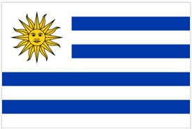
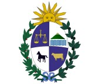
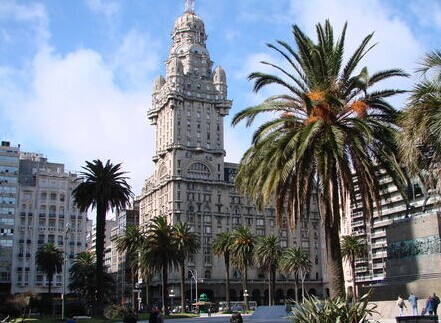
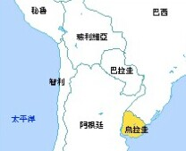

- 乌拉圭国旗
- 乌拉圭国徽
- 乌拉圭标志性建筑
- 乌拉圭地理位置
乌拉圭概况
位于南美洲东南部
人口概况
人口总数:3,477,778(2008年7月统计)
出生率:14.17‰(2008年统计)
[乌拉圭狂欢节]
乌拉圭狂欢节
死亡率:9.12‰(2008年统计)
民族:白人(88%)、混血人种(8%)、黑人(4%), 另有人数极少的美洲印第安人。
主要宗教:罗马天主教(66%)(全国近一半人口定期去教堂做礼拜)、新教(2%)、犹太教(1%)、其他宗教(31%)。
语言:西班牙语、巴西边境使用的葡萄牙语和西班牙语的混合语。
教育普及度:98%(2003年统计)
乌拉圭经济
盛产大理石、紫水晶石、玛瑙、乳白石等。已探明有铁、锰等矿藏。林业和渔业资源丰富, 盛产黄鱼、鱿鱼和鳕鱼。乌拉圭是一个传统农牧业国家。工业不发达, 以农牧产品加工业为主。经济依赖出口, 主要出口产品有肉类、羊毛、水产品、皮革和稻米等。２０世纪９０年代以来, 乌实行新自由主义经济政策, 在推进传统产业的同时更注重非传统产业的发展, 积极参与地区经济一体化。受阿根廷、巴西经济复苏的影响, 乌经济于２００３年出现复苏并在２００４年有所增长。旅游业较发达。境外游客主要来自阿根廷, 巴西、巴拉圭和智利等周边国家。埃斯特角和首都蒙得维的亚是主要旅游地。
外交关系
奉行和平与开放、尊重别国主权、不干涉内政和不诉诸武力的外交政策。主张多元外交, 外交关系不受政治制度的限制, 在自决和不干涉别国内政的原则基础上同世界各国保持和发展友好合作关系。强调外交指导方针是维护国家利益, 注重经济外交。
经贸往来
中乌经济互补性强。建交当年两国贸易额仅1.24亿美元，双边贸易快速发展，中方对乌投资持续增加，合作领域不断扩大。两国建有经贸混委会机制，迄今已举行16次会议。2009年巴斯克斯总统访华期间，双方签署政府间贸易与投资合作谅解备忘录，乌方宣布承认中国完全市场经济地位。
据中国海关总署统计，2012年双边贸易额43.39亿美元，其中中方出口24.13亿美元，进口19.26亿美元。2013年第一季度双边贸易额7.7亿美元，其中中方出口5.4亿美元，进口2.3亿美元，同比分别增长28.4%、17.2%和64.1%。中国是乌第一大贸易伙伴和羊毛最大进口国。乌是我国进口大豆第四大来源国。中方主要出口计算机与通讯技术产品、摩托车、DVD和空调器，主要进口羊毛、大豆、纸浆、皮革、肉及实用杂碎、冻鱼等。